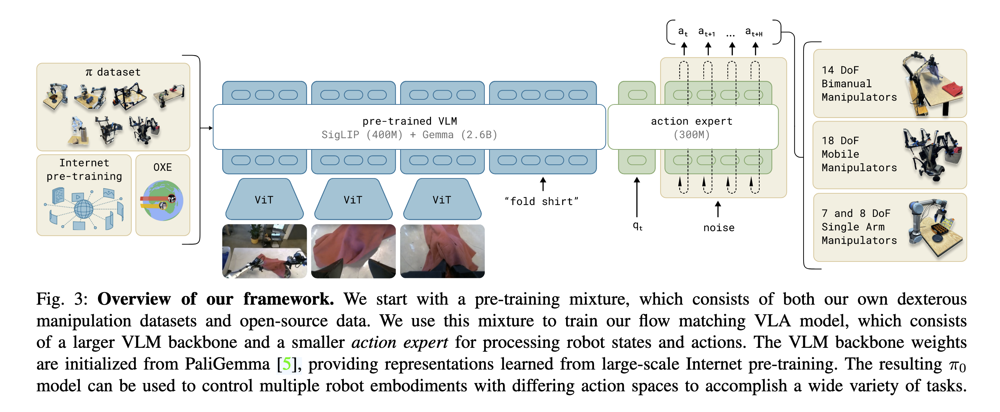
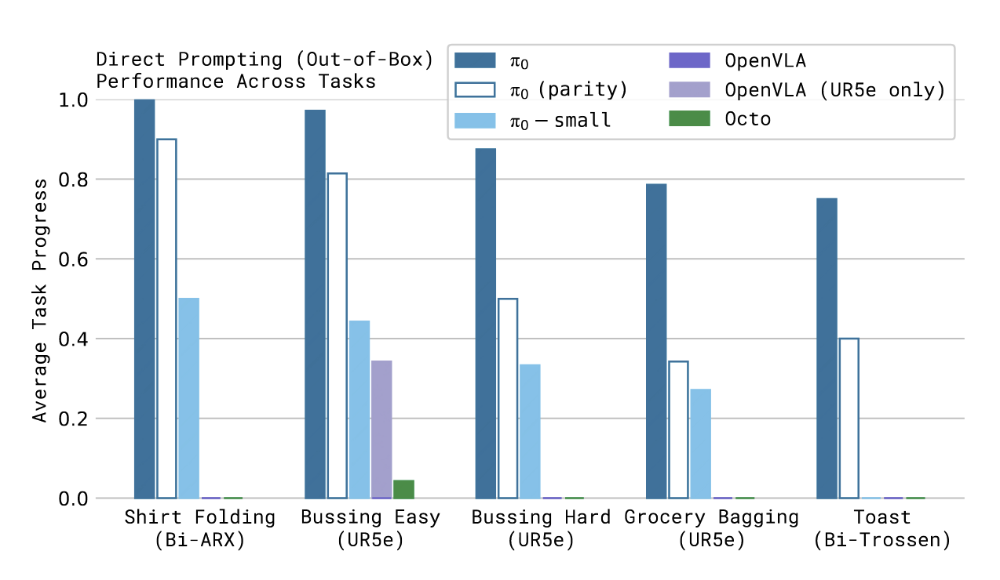
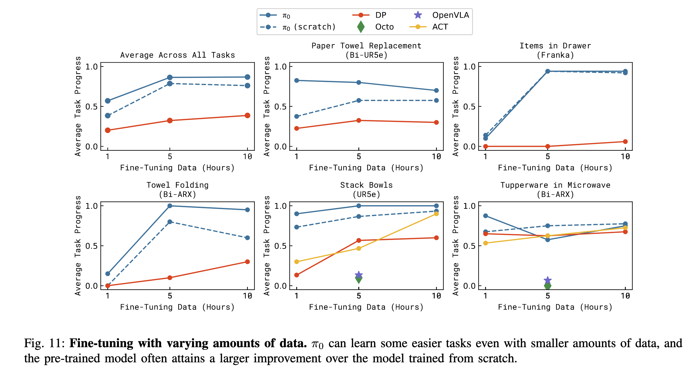

π0: A Vision-Language-Action Flow Model for General Robot Control
TL;DR
- Key ideas:
- Integrate Vision-Language Model (VLM) visual-semantic knowledge into robot control.
- Use flow matching to represent continuous, high-frequency action chunks.
- This achieves fine-grained and coherent action generation.
- Utilize cross-embodiment data for generalization across different robots.
- slipt pre-training and post-training in robotics is similar to LLM’s pretrain/finetune/align approach:
- Pre-training learns broad knowledge.
- Post-training learns specific and stable strategy.
- Experience in other fields shows that pre-training a general vision-language model on diverse datasets, then fine-tuning it for specific tasks, outperforms training solely on specific tasks.
- This approach can, to some extent, alleviate data scarcity issues because generalist models have many more data sources, including non-robot sources.
- For robustness, diverse datasets may contain corrections and recovery behaviors.
- Therefore, generalist models may solve problems related to data availability, generalization, and robustness.
There are three main challenges:
- Large-scale datasets and pre-training.
- The right model architectures that are highly compatible yet good enough for specific tasks.
- The right training recipe.
Similar to language model training, our method is divided into two phases: pre-training and post-training.
- Pre-training allows the model to learn various tasks at rudimentary proficiency and follow language commands.
- For complex and dexterous tasks, we then employ a post-training procedure.
Model
- We use PialiGemma as the Vision-Language Model (VLM).
- In addition to images and text as conditions, we also include proprioceptive state.
- We add an extra set of parameters for flow matching to denoise the action sequence.
- This part primarily references “Transfusion: Predict the next token and diffuse images with one multi-modal model.”
- However, unlike Transfusion, we separate the VLM and the flow model here.
- This is a Flow model, not a diffusion model. It predicts a vector field, not a score function.
The model predicts p(At∣ot), where At=[at,at+1,…,at+H−1] is the action chunk to be predicted, and H is the length of the action chunk, with H=50.
- During inference, we use 10 steps.
- The action model size is 300M, while PialiGemma is 3B.

Data and Training
- Pre-training data should be as diverse as possible, even if some data quality is not high. Intuitively, diverse (but lower quality) pre-training data allows the model to recover from mistakes and handle highly varied situations.
- Approximately 10,000 hours of data are used.
- Post-training data should be of the highest possible quality.
Pre-training Data
- 9.1% from open-source datasets:
- OXE: Open X-Embodiment: Robotic learning datasets and RT-X models
- BridgeData v2: A dataset for robot learning at scale
- DROID: A large-scale in-the-wild robot manipulation dataset
- Robots and tasks in these datasets typically have one or two cameras and use low-frequency control (between 2 and 10 Hz).
- However, these datasets cover a wide range of objects and environments.
Our Own Datasets: 903 million timesteps, 68 tasks.
- 106 million steps are from single-arm robots.
- 797 million steps are from dual-arm robots.
- Tasks are more complex than simple noun-verb combinations, for example, “bussing a table,” which requires placing various items in designated locations.
To prevent some tasks from being overrepresented, the weight for each task-robot combination is n0.43, where n is the number of samples for that category.
Seven Robot Types Used:
- UR5e: An arm with a parallel jaw gripper, with a wrist-mounted and over-the-shoulder camera.
- Bimanual UR5e.
- Franka.
- Bimanual Trossen.
- Bimanual ARX & Bimanual AgileX.
- Mobile Trossen & Mobile ARX.
- Mobile Fibocom.
How well does π0 perform after pre-training on a variety of tasks present in the pre-training data?
Comparison with Other Models:
- π0-small: Does not use VLM initialization, uses DistilBERT as text encoder, and a smaller pre-trained ViT as image encoder. It has 470M parameters.
- OpenVLA, 7B: Uses all our datasets but with fewer epochs.
- Octo, 93M: A generalist model, not VLA but a diffusion model. Uses all our datasets but with fewer epochs.
- π0 parity: Uses the same number of epochs as OpenVLA and Octo for fair comparison.
Results:
- π0 significantly outperforms baseline models on more complex tasks.
- π0 parity still outperforms other baselines, demonstrating the effectiveness of its model architecture.
- π0-small outperforms OpenVLA and Octo but is not as good as π0 parity, highlighting the importance of VLM.

Language Following Ability
- We compare only π0 and π0-small.
- π0 significantly outperforms π0-small in language following accuracy. VLM initialization substantially improves the model’s ability to understand and execute intermediate language steps.
Three Variants of Instructions:
- Flat: Direct command, e.g., “bag the groceries.”
- Human: Step-by-step intermediate language instructions provided by human experts.
- High-level VLM policy: Intermediate language instructions generated by a VLM.
Findings:
- π0-small cannot learn useful intermediate steps from human expert instructions, whereas π0 can.
- The high-level VLM policy performs slightly worse than human expert instructions.
Learning New Dexterous Tasks
Three Categories of Tasks:
- Easy: Similar to tasks in the pre-training data, e.g., UR5e stack bowls, towel folding.
- Medium: “Tupperware in microwave” – involves an unseen object (microwave). Introduces new objects.
- Hard: Significantly different from pre-training, e.g., paper towel replacement, Franka items in drawer.
Overall:
- Fine-tuning based on π0 generally outperforms other methods, especially showing stronger data efficiency when fine-tuning data is limited (e.g., 1 hour).

Compare with or without Pre-training
Can training only on fine-tuning data achieve the same performance as fine-tuning π0?
Those tasks are complex, long-duration, and require multiple decisions and long-term planning.
Let’s use “π0” to refer the model finetuned on pre-trained π0.
Let’s use “π0-only” to refer the model pretrained only on fine-tuning data.
Findings:
- For tasks included in the pre-training data, π0 significantly outperforms the π0-only
- For tasks not included in the pre-training data, π0 still leads, but the gap is smaller.
reference
-
Open X-Embodiment: Robotic learning datasets and RT-X models.
-
Rt-2: Vision-language-action models transfer web knowledge to robotic control.
-
Tinyvla: Towards fast, data-efficient vision-languageaction models for robotic manipulation
-
Diffusion policy: Visuomotor policy learning via action diffusion
-
Scaling diffusion policy in transformer to 1 billion parameters for robotic manipulation.
-
Playground v3: Improving text-to-image alignment with deep-fusion large language models
-
Transfusion: Predict the next token and diffuse images with one multi-modal model.